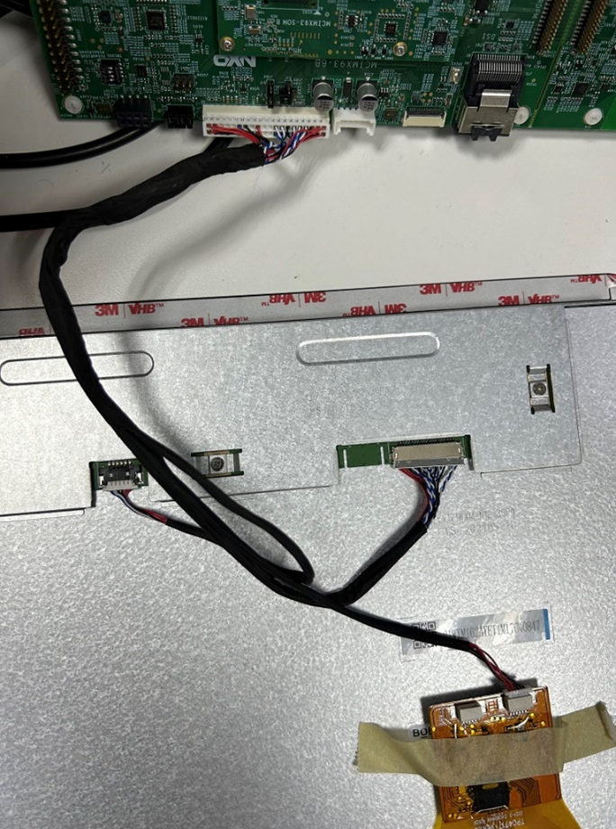

$ zstd -d -f imx-image-multimedia-imx93evk.wic.zst
zstd command, install using: sudo apt-get install zstd.$ sudo dd if=imx-image-multimedia-imx93evk.wic of=/dev/sdx bs=4M &&
sync
dtb with lvds-panel dtb.$ cd /run/media/boot-mmcblk1p1
$ cp imx93-11x11-evk-boe-wxga-lvds-panel.dtb imx93-11x11-evk.dtb
$ ./gui_guider&